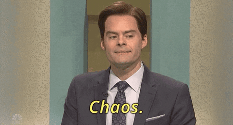

Save the Sea Turtles Foundation

Overview
Save the Sea Turtles Foundation is a non-profit organization founded on Florida’s coast in 1987 aimed to support students, professionals and academic research efforts in the world of Marine Biology.

Their mission and impact on our waters is incredibly powerful while their current website lacks this emotion. Especially since the foundation collects donations, runs a store and a membership program all from their website, it was due for a major refactor.
Timeline
16 weeks (about 8 sprints)
Project Status
In Development 💻
Team
- Erin: Project Manager
- Rachel (Me): Lead Researcher & UX Designer
- Ross: Marketing Strategist
- Ricky: Copywriter
My Roles in depth
- Site Audit
- User Testing
- Wireframing
- Prototyping
- Hi-Fidelity Design
- Development Collab
Discovery Phase
Our discovery phase found itself deep in the weeds of a UX web audit followed by user feedback on the current site. We were then able to craft a suitable problem statement to aid our competitor analysis.
UX Audit
View Audit Report
In order to precisely define the problem statement, we had to
run an audit.
This allowed us to pinpoint missing clarity, technical
issues, usability pitfalls and inaccessible practices.
To spare your time from reading the entire report, here are some
of the major pain points identified from the
audit:
-
Accessibility
The foundation caters to individuals of all ages. The inaccessibility through out the site doesn't allow for an inclusive experience and heavily contributes to the high bounce rate.- Color Blindness: many color contrasts failed to comply with WCAG across the site.
- Cognitive load: patterned background (a true seen from the 90's) unfortunately painted the site's corridors.
- Keyboard-only usability: very poor. It'd be safe to say that users not relying on a mouse or trackpad did not stay very long on this site.
- Mobile adaptability: to my surprise, content did shift according to device size but... that's about it.

An example poor use of yellow text on blue backgrounds, bolded text and titles that look like links but are just titles - all popular styles throughout the site.
-
Emotion
A key aspect of non-profit organizations as seen with major societies like ASPCA, Sea Legacy and Oceana is emotion. In my content analysis case study I specifically about the positive turn-around of emotional design. -
Four different sites
You read that right, the Foundation’s site is a combination of four different sites with different URLs. And no, they don't link back to each other either.
The user is unknowingly bounced around these multiple sites under the same roof with no way of going back. Not ideal.  -
Poor syntax
Throughout the site there were components that acted as others which was a trend in past digital eras. It showed the lack of time and knowledge dedicated to the site and spoke to the dated-ness of the site.
Our solution relied on a component-oriented style guide with predefined elements like buttons, input fields, navigation bars etc.
Gathering User Feedback
To identify user-centered pain points that were scattered
throughout the current site,
we polled 23 users; 7 with experience in biology and 16 with
interest in oceanic biology.
We had them walk-through a scenario and analyzed the task
completion via think aloud protocol followed by
rating scale feedback. The results reiterated
our findings and helped us focus on areas of improvement. Below
are two snippets we pulled from the tests that heavily
exemplified the current site's experience.

The Problem Statement
The Save the Sea Turtles Foundation is currently observing low audience conversion with quick bounce rates due to poor website usability and a lack of organization identity. To overcome the currently-outdated site and enhance its experience, the organization will undergo a complete redesign in architecture and visual design as well as define their brand. This will ultimately provide the engaging, educational and inspirational experience that is desired by visitors.
Design Phase
After establishing a ground for improvement, it was time to define the Save the Sea Turtles brand, create a style guide, re-vamp the site's architecture and begin to wireframe.
Proposing a new sitemap
As mentioned earlier, the site's architecture was chaotic. It
bounced innocent users around four different sites with
different designs and URLs.
It was easy to get lost within the tunnels of the
site.
The first sitemap below is the original one - it speaks for
itself.
The next map is what we proposed. We found that the Shop was
required to be a separate URL. To aid in lessoning confusion,
we opted to keep the same exact top navigation on both
sites; the user switched site URLs but would never know.

Current sitemap

Proposed sitemap
Wireframing
In a rough total of 20 hours and a
handful of iterations, we crafted wireframes to
be evaluated by our clients. This was a great opportunity to
ensure content was being represented properly throughout the
site and all ideated features were achievable in
development.
Our wireframe effort geared towards education and content
visibility.
Below you'll see our toughest decision - the landing page.
We A/B Tested multiple different designs that prioritized
different content. Ultimately, we chose to use tabbed sections on the homepage
to make all of the content available but only if the user was
interested. By default, the landing page was to display the
organization's mission.

Branding & Style Guide
Ross, our marketing strategist, and I teamed up to give Save the Sea Turtles Foundation a brand image to give them a voice and consistent message across the site and beyond. After finalizing the brand palette, Ross created a logo family and marketing plan while I began crafting a style guide from which we'd build. I was able to develop a UI library from the style guide to provide the developers with a SASS guide to streamline their build.

Implementing the Style Guide
Style guides come in clutch!
It was essentially like applying a mini design system to bring
the wireframes to life. After giving the wires some style, it
was a game of content. Adding content to key pages ensured that
we check all of the boxes like author pages and error feedback.
Inline and apparent feedback was poor on the current site so it
was very reassuring to build feedback states into the style
guide.


Development
The site is currently in development. Stay Tuned :)